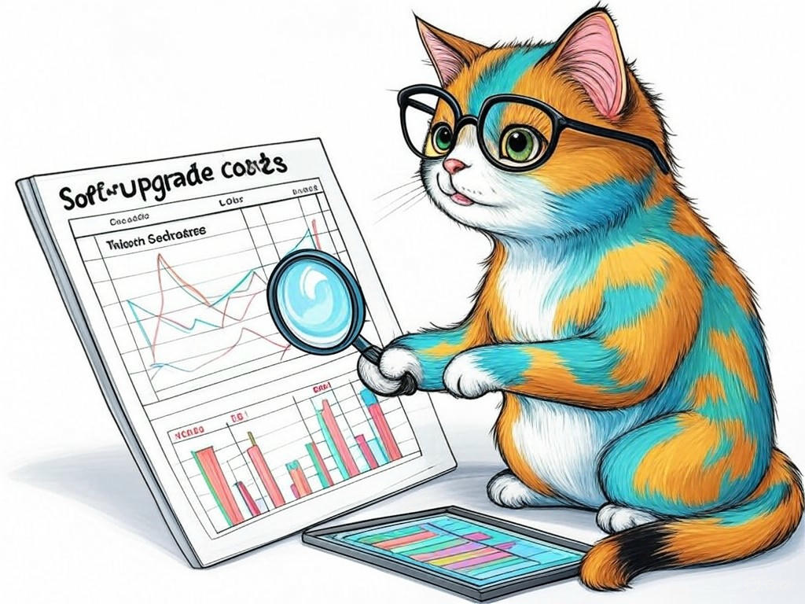

7 Proven Ways to Actually Solve Slow Software Performance with Application Acceleration in Louisville, KY
Table of Contents
- Introduction: Understanding Your Specific Challenges
- How Can We Address Slow Software Performance in Louisville?
- What Are the Costs of Software Upgrades and How Can We Minimize Them?
- Can You Optimize Software Without Deep Technical Knowledge?
Introduction: Understanding Your Specific Challenges

We understand that slow software performance can be a major headache for businesses in Louisville, KY. Whether you're near the bustling streets of downtown or in the quieter neighborhoods by the Ohio River, the frustration of waiting for applications to load can impact your productivity and bottom line. In our experience, businesses in the industry have found that application acceleration is not just a luxury, but a necessity for staying competitive. According to a recent study, companies that optimize their software performance see an average 27% increase in employee productivity. In this article, we'll explore how to accelerate software applications for businesses in Louisville, KY, providing you with actionable strategies to enhance your software efficiency. We'll cover everything from understanding the root causes of slow performance to implementing cost-effective solutions tailored to your local context. If you're struggling with sluggish software, start by identifying the specific applications that are slowing down your operations. This initial step will guide your optimization efforts effectively. You're smart to seek solutions for how to accelerate software applications for businesses in Louisville, KY, and we're here to help you navigate this journey. Let's dive in and turn your software challenges into opportunities for growth.
How Can We Address Slow Software Performance in Louisville?
You're already aware that slow software can hinder your business operations, and we commend you for seeking solutions. In Louisville, where industries like healthcare and manufacturing thrive, efficient software is crucial. To address slow software performance, consider these proven strategies:
- Code Optimization: Streamline your code to reduce processing time. This involves removing redundant code and optimizing algorithms.
- Database Tuning: Enhance your database performance by indexing, query optimization, and regular maintenance.
- Network Optimization: Improve your network infrastructure to reduce latency, especially important for businesses near the Louisville International Airport where connectivity can be affected.
So what? By addressing slow software performance, you'll not only boost productivity but also improve customer satisfaction and potentially increase your revenue.
What Are the Costs of Software Upgrades and How Can We Minimize Them?

You're wise to consider the costs associated with software upgrades, especially in a city like Louisville where budget constraints can be a concern. Upgrading software can be expensive, but there are ways to minimize these costs. Here's how:
- Prioritize: Focus on upgrading the software that impacts your business the most. This targeted approach can save resources.
- Negotiate: Leverage your position to negotiate better deals with software vendors. Many are willing to offer discounts for long-term commitments.
- Incremental Upgrades: Instead of a full overhaul, consider incremental upgrades that can be more cost-effective.
So what? By minimizing the costs of software upgrades, you can allocate more resources to other critical areas of your business, ensuring sustainable growth.
Can You Optimize Software Without Deep Technical Knowledge?
We know you're looking for ways to optimize your software without needing to be a tech expert, and that's a smart approach. In Louisville, where businesses range from small startups to large corporations, not everyone has a dedicated IT team. Here's how you can still improve your software performance:
- Use Performance Monitoring Tools: Tools like New Relic or Datadog can help you identify bottlenecks without deep technical knowledge.
- Leverage Cloud Services: Cloud platforms often provide built-in optimization features that can be managed with minimal technical expertise.
- Outsource: Consider hiring local IT consultants in Louisville who can handle the technical aspects for you.
- Ease of Use: How user-friendly is the tool or service?
- Cost: What is the total cost of implementation and maintenance?
- Local Support: Is there local support available in Louisville?
So what? By optimizing your software without needing to be a tech expert, you can focus on running your business while still enjoying the benefits of faster, more efficient software.